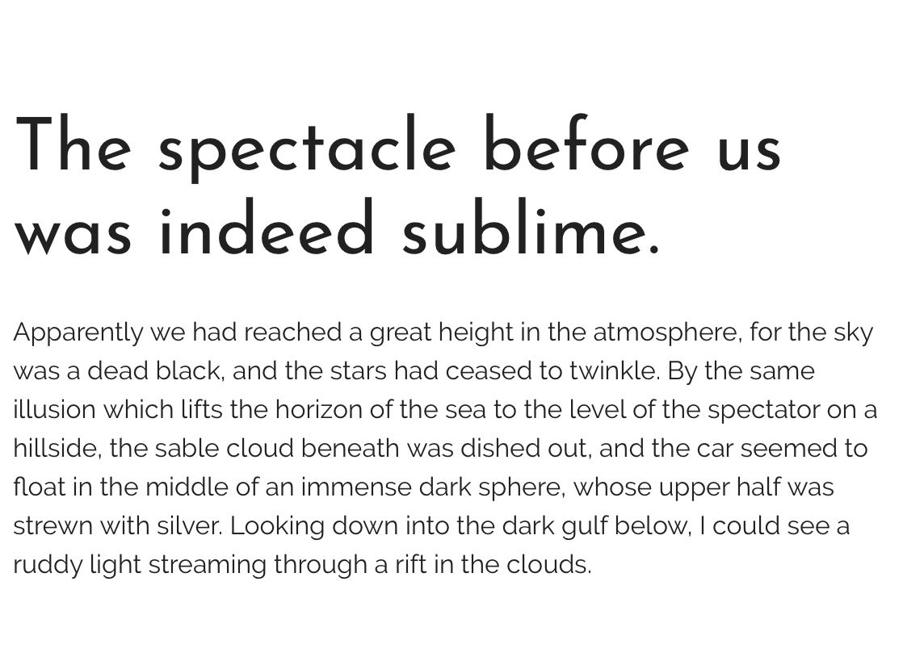

Typography
The headlines, or h tags, will be in the font Josefin Sans.
The body copy, or the normal paragraph font, will be in the font Raleway.
The headlines, or h tags, will be in the font Josefin Sans.
The body copy, or the normal paragraph font, will be in the font Raleway.
Here is a sample of what the fonts look like together according to fonts.google. All of the fonts on this website plan have been changed to match as well.
